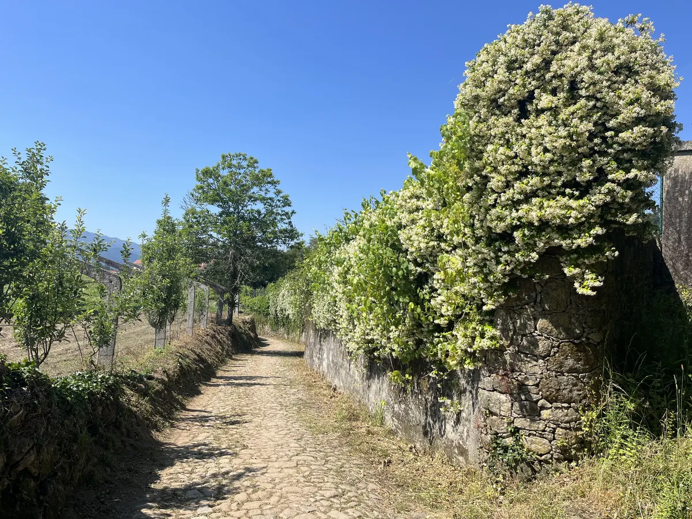

In the summer of 2023, I hiked from Porto, Portugal to Santiago de Compostela, Spain — around 240 km in 11 days, following the Camino Português.
The Camino Português, 2023.

In the summer of 2023, I hiked from Porto, Portugal to Santiago de Compostela, Spain — around 240 km in 11 days, following the Camino Português.